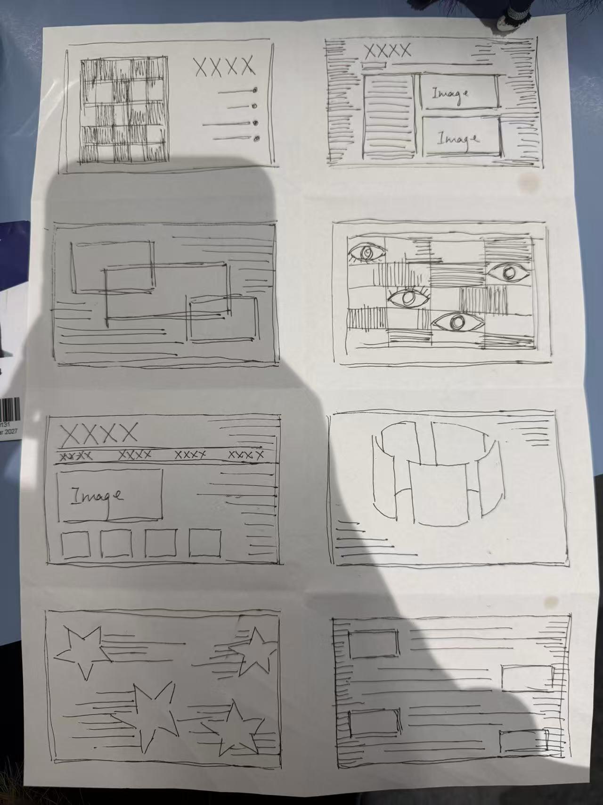
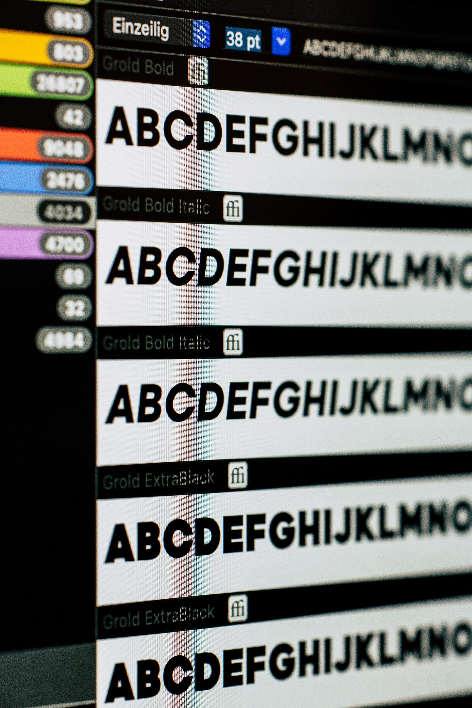
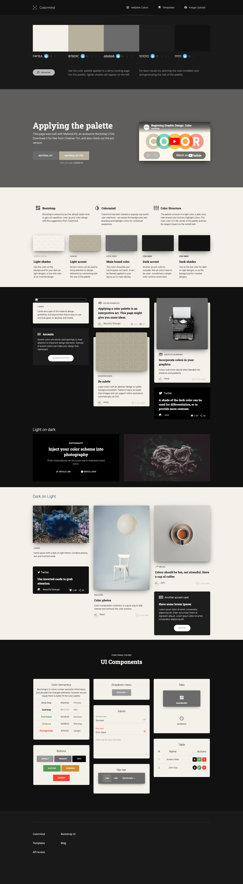
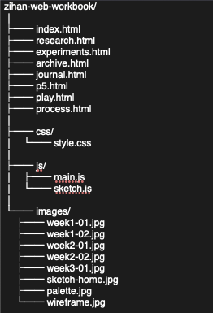

Sketches

The first stage was drawing page structures by hand. These sketches helped me think about scale, pacing, and how each page could hold a different mode of documentation.
This page gathers the materials behind the final site: sketches, type tests, palette studies, and the sitemap that organized the workbook into a sequence of linked but distinct visual spaces.

The first stage was drawing page structures by hand. These sketches helped me think about scale, pacing, and how each page could hold a different mode of documentation.

I explored how typography could shift the mood of the workbook. Serif headings introduced a more artistic and editorial tone, while simpler body text kept the pages readable and grounded.

The final palette uses warm off-whites, muted stone, grey, charcoal, and black. This range creates a dark interface that feels calm, cinematic, and image-led.

The sitemap shaped the portfolio as a sequence: research, experiments, archive, journal, interaction, play, and process. It turned separate pages into one consistent body of work.